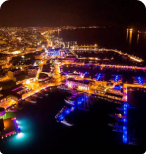
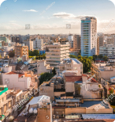

our services
Family
Relocation
Relocation
With strategic planning, we simplify the moving process so you and your family can
feel safe and confident.
Find Out More
Business
Relocation
Relocation
We handle the responsibility of moving your business to Cyprus, so you can focus on
your business goals.
Find Out More

Investment
plans
plans
Discover the opportunity to further enhance your business ambitions, by choosing the
optimal investment plan.
Find Out More
Moving to Paradise
Have you ever dreamed about the perfect place to live? Your definition of perfect may be
different someone else’s. Are you longing to live by the beach and listen to the
soothing waves or are you a kind of person who enjoys the bustling sounds of the city?
Whatever lifestyle you desire, Cyprus has it all! Whether you’re travelling with your
family, your partner, or as a solo business entrepreneur, this exotic island can offer
you a little bit of everything.
If you’ve made the decision to relocate to Cyprus, then you are expecting to find a safe place to settle. With extremely low crime rate, stunning sandy beaches, and awe-inspiring mountain views, Cyprus is the place to be!
If you’ve made the decision to relocate to Cyprus, then you are expecting to find a safe place to settle. With extremely low crime rate, stunning sandy beaches, and awe-inspiring mountain views, Cyprus is the place to be!
Why Choose Cyprus?
When you’re searching for the ideal home you want everything to be
perfect. This is why over the years more and more people from all around the world are
choosing Cyprus as their ultimate destination. This smal Mediterranean mesmerizes millions
of visitors every year.
Progressive tax system
Offering one of the most attractive tax regimes in
Europe
Stunning weather and climate
Enjoy a high quality of life with over 324 days of
sun annually

Blooming expat community
Become part of an increasingly diverse community

Family-oriented values
Excellent education standards and extremely low crime
rates

Larnaka
Being the third largest city in Cyprus and home to the
island’s most busy airport, it offers visitors a variety of activities and
experiences that will remain unforgettable to any individual.
It is known for its Salt Lake that hosts thousands of Flamingos each year as well as for its sandy beaches and historical sites.
The rapidly increasing corporate ecosystem and comfortable lifestyle create an exceptional living environment for anyone who is looking to enjoy a relaxed life by the sea.
It is known for its Salt Lake that hosts thousands of Flamingos each year as well as for its sandy beaches and historical sites.
The rapidly increasing corporate ecosystem and comfortable lifestyle create an exceptional living environment for anyone who is looking to enjoy a relaxed life by the sea.

Limassol
The sunny city of Limassol is the second largest city of the island, and it is among
the most desirable travel and business destinations both for families and for
entrepreneurs looking
to expand their business horizons.
The combination of elegant accommodation
and ancient architectural views is bound
to capture the interest of people of any age.
The Limassol Marina is the first marina to harbor yachts in Cyprus and it is surrounded by renowned bars and restaurants. The residents of Limassol pride themselves on their cultural values and festivities as hundreds of theatrical performances take place each year at the Rialto theater, and the city holds an annual Wine Festival and Carnival Parade.
The Limassol Marina is the first marina to harbor yachts in Cyprus and it is surrounded by renowned bars and restaurants. The residents of Limassol pride themselves on their cultural values and festivities as hundreds of theatrical performances take place each year at the Rialto theater, and the city holds an annual Wine Festival and Carnival Parade.


Nicosia
Also known as Lefkosia, Nicosia is the capital city of Cyprus and the only divided
capital city
in the world. The unique urban scenery is built upon a rich historical past and its
mixture with modern lifestyle.
It is in close proximity to every other city in Cyprus, giving residents the flexibility of choosing to enjoy the breathtaking views from the mountain tops and soothing beaches of the coastal cities within minutes.
Nicosia has become an attractive cosmopolitan city made of diverse cultural communities, excellent healthcare facilities and every aspect one requires to build the lifestyle of your dreams.
It is in close proximity to every other city in Cyprus, giving residents the flexibility of choosing to enjoy the breathtaking views from the mountain tops and soothing beaches of the coastal cities within minutes.
Nicosia has become an attractive cosmopolitan city made of diverse cultural communities, excellent healthcare facilities and every aspect one requires to build the lifestyle of your dreams.


Paphos
Paphos is located on the southwest coast
of Cyprus, and it is one of the most popular cities for expat communities. The
crystal-clear, family-friendly beaches are a frequent holiday retreat for millions
of tourists all year round. Its exceptional infrastructure includes a huge shopping
mall, hospitals, the second largest airport of the island, and many schools.
These are only a few reasons why people choose to move to Paphos, as there are many more reasons it is considered one of the most excellent places to live in Europe.
These are only a few reasons why people choose to move to Paphos, as there are many more reasons it is considered one of the most excellent places to live in Europe.
WHO WE ARE
PAM Consulting is built upon a team of motivated professionals aiming to provide
families and businesses the services they need to relocate to the island of Cyprus.
We understand the challenges of deciding to relocate and this is why we prioritize our clients’ needs by making sure that the whole relocation process is as smooth and simple as possible.
More about us
We understand the challenges of deciding to relocate and this is why we prioritize our clients’ needs by making sure that the whole relocation process is as smooth and simple as possible.
how we make it happen
We listen
Our most prominent purpose is to understand and
identify with your needs so we can effectively find ways to provide solutions.
We strategize
According to your requirements, our team designs a
thorough series of steps that will make the relocation process as smooth
as possible.
We provide
We implement our services that are based on efficient
strategic planning that respond to your family’s and business’s goals and ambitions.
We manage
Once you are settled, we make sure that everything is
according to your expectations and your vision of the quality of our services.


Our Partners


Frequently Asked Questions